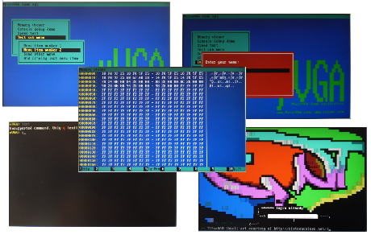

MicroVGA conio Text User Interface Library
Console I/O C functions, or conio.h is a header file (sometimes called "conio library") used in Windows console applications or MS-DOS compilers to create text user interfaces. This header declares several useful library functions for performing "console input and output" from a program.
MicroVGA-CONIO library provides conio.h-compatible interface for embedded applications using MicroVGA-text modules.
MicroVGA-CONIO library can be used with almost every microcontroller, starting with low-cost 8-bit MCUs such as i8051/PIC16/ATtiny, through 32-bit powerful system-on-chips (such as various ARM/MIPS systems), to fully featured embedded Linux boards. Small conio application can fit into 4 kbytes of flash and 128 bytes of RAM!
Demo projects
 MicroVGA-CONIO library contains demo project for several platforms:
| MCU Family | MCU | Compiler |
|---|---|---|
| Atmel AVR (ATmega) | ATmega128 | AVRStudio |
| Microchip dsPIC33/PIC24 | PIC24HJ32GP202 | Microchip MPLAB IDE |
| NEC 78K0S | uPD78F9222 | IAR Embedded Workbench |
| NXP/Philips LPC21xx | LPC214 | IAR Embedded Workbench |
| Renesas M16C 62p | M3062 | Renesas High-Performance Embedded Workshop |
| STmicro STR7 | STR712 | IAR Embedded Workbench |
| Texas Instruments TMS470 | TMS470R1A128 | IAR Embedded Workbench |
Documentation
License
This program is free software: you can redistribute it and/or modify it under the terms of the GNU General Public License as published by the Free Software Foundation, either version 3 of the License, or (at your option) any later version.This program is distributed in the hope that it will be useful, but WITHOUT ANY WARRANTY; without even the implied warranty of MERCHANTABILITY or FITNESS FOR A PARTICULAR PURPOSE. See the GNU General Public License for more details.
You should have received a copy of the GNU General Public License along with this program. If not, see www.gnu.org/licenses/.
Downloads
Current version is 0.1.9, released May 18, 2009.- µVGA demo projects (including conio µVGA library)
- µVGA conio library